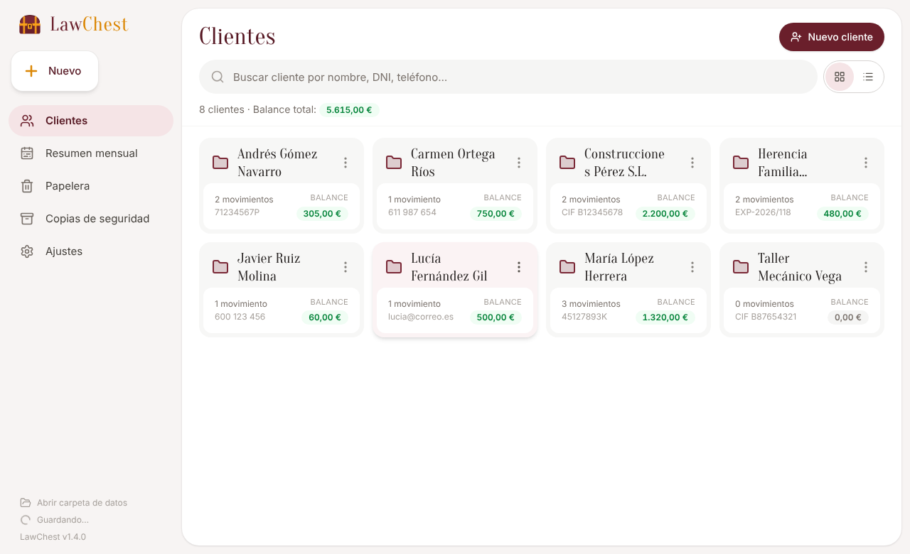
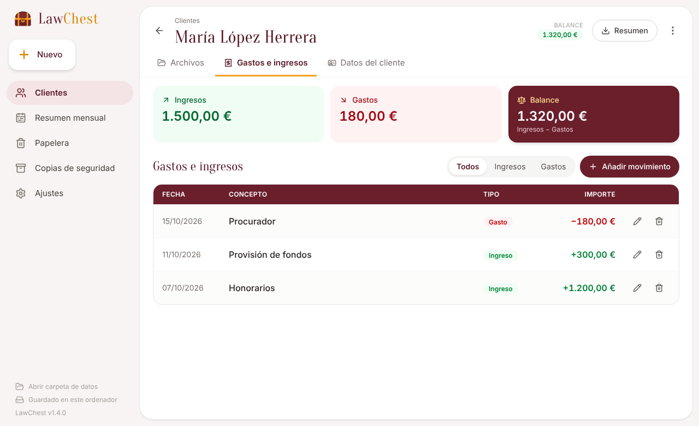
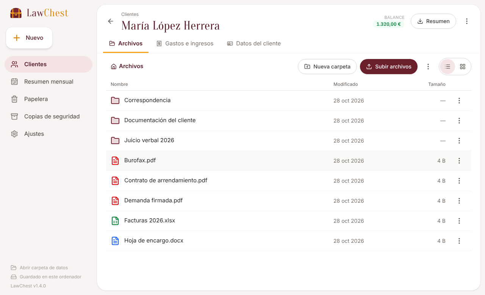

Clientes, documentos y cuentas en un solo sitio, tan sencillo como Google Drive. Tus datos se quedan en tu ordenador: sin cuentas, sin servidores, sin cuotas.
Descargar para WindowsGratis · Windows 10 y 11 · Notas de la versión

Arrastra, sube o pega (Ctrl+V) cualquier archivo. Subcarpetas, renombrar, mover y abrir con doble clic.
Honorarios, provisiones, tasas… con el balance siempre a la vista para saber qué falta por cobrar.
Por cliente o del mes completo, en PDF, Excel o CSV, listos para imprimir o enviar.
Lo que borres se puede recuperar durante un mes; después se elimina solo.
Guarda los datos en tu OneDrive o Dropbox y trabaja igual desde el despacho y desde casa.
Copia de seguridad en un clic y aviso automático cuando hay una versión nueva.

